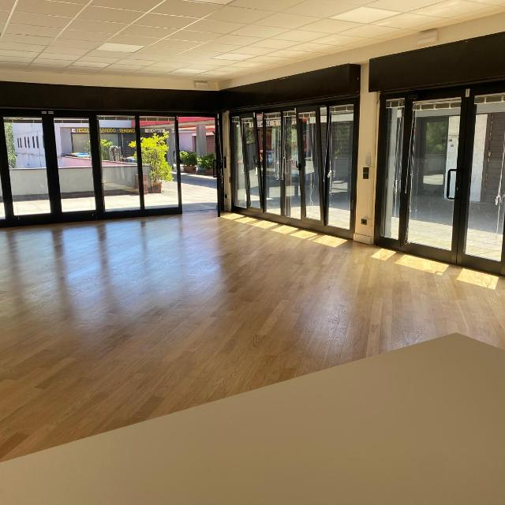

Uno spazio di comunità in via Anderlini, a Modena. A community space in via Anderlini, Modena.
In via Anderlini 89/D, nel quartiere Sacca di Modena, un immobile confiscato alla criminalità organizzata diventa uno spazio aperto alla città, animato da associazioni e realtà del territorio.
At via Anderlini 89/D, in Modena's Sacca neighbourhood, a property confiscated from organised crime becomes a space open to the city, brought to life by local associations and groups.

Nel 2026 e nel 2027 Juter ospiterà e co-organizzerà in questo spazio attività dedicate a:
Throughout 2026 and 2027 Juter will host and co-organise activities in this space dedicated to:
Segui la pagina News e i nostri canali social per scoprire le date.
Follow our News page and social channels to find out the dates.
Il Comune di Modena racconta il nuovo utilizzo del bene confiscato di via Anderlini e le attività che animeranno lo spazio.
The City of Modena explains the new use of the confiscated property in via Anderlini and the activities that will bring the space to life (article in Italian).
Leggi l'articolo del Comune di ModenaRead the City of Modena article ContattaciContact us